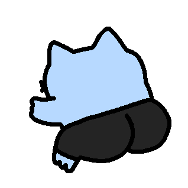

The band sits idle until you bring someone in. Tap a player to add their part, tap again to drop it — the loop never restarts, so any combination stays locked together.
Heads up: if you can’t hear anything, check your ringer / silent switch.
Loop Station
